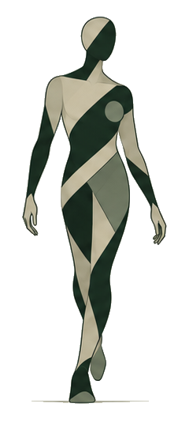
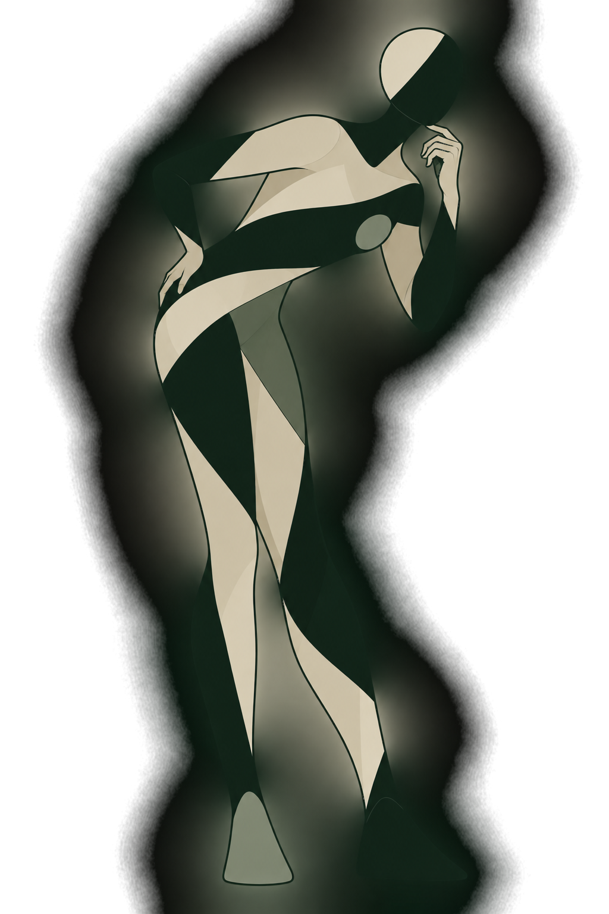
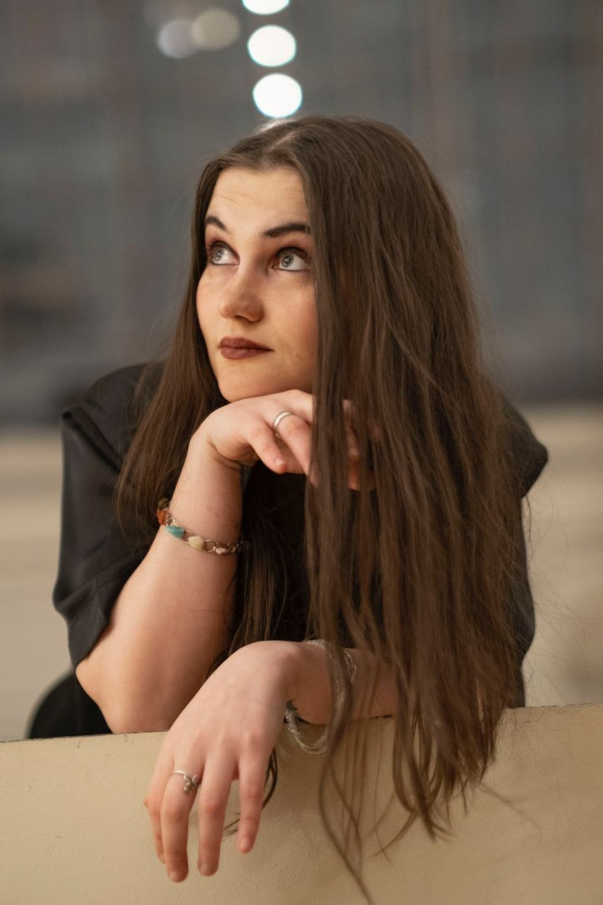

Инициативная работа кандидата · открытые данные · сентябрь 2026
PROORGANIC: как связать контент, магазин и повторную покупку
По открытым данным у бренда уже есть сильный продуктовый контур, эксперты, Telegram, короткие видео, маркетплейсы и собственный магазин. Поэтому я бы не начинала с идеи «делать больше контента». Я бы связала уже существующие части системы вокруг задачи человека — от первого вопроса до выбора, покупки и следующего полезного контакта.
Важно: это не внутренний аудит. Я показываю, что видно снаружи, где заканчиваются открытые данные и какие решения стоит проверять внутри.

01 · Основа разбора
На чём построены выводы
Я не беру один удачный пост и не делаю из него стратегию. Для разбора собран несколько разных массивов.
товарная позиция
47 отдельных товаров и 4 набора: цены, скидки, назначение, карточки и темы, вокруг которых строится ассортимент.
Это срез каталога, не данные о продажах.единиц контента
Telegram, карточки товаров и короткие видео: что объясняют, что обещают и куда ведут человека дальше.
Выборка целевая, а не весь контент бренда.запусков «Тарифа доверия»
Сравнила место покупки в серии запусков: маркетплейсы, смешанный маршрут и собственный магазин.
Это отдельная серия, не общая воронка компании.публичных источников
Официальный сайт, вакансии, договоры, Telegram, дизайн-материалы и сохранённые срезы.
Ссылки стоят рядом с существенными выводами.02 · Что уже есть у бренда
PROORGANIC не нужно изобретать заново
Публичные материалы дают достаточно опор, чтобы не начинать работу с пустого листа.
Продуктовая позиция
Бренд подчёркивает понятные составы, хорошее сырьё в своём ценовом сегменте, рабочие формы и дозировки и доступность. Отдельно показывает производство, специалистов, тестирование и сертификацию.
«О бренде» ↗«Производство» ↗Стратегия и исследование аудитории уже есть внутри
В вакансии прямо сказано, что бренд-стратегия и исследование аудитории существуют. Значит, задача руководителя — не сочинять новые основы, а собрать контент разных каналов в работающую систему и сверять решения с внутренними данными.
Вакансия ↗Есть визуальные ориентиры
В найденной презентации указаны Pantone 363 C, Proxima Nova, природная палитра, минимализм и собственные иллюстрации. Я использую материал как рабочий ориентир, но не называю его подтверждённым финальным брендбуком.
«Адаптация концепта» ↗03 · Ассортимент и потребности
Какие задачи человека уже видны в каталоге
Это рабочая разметка моей выборки. Один товар может попадать в несколько задач, поэтому числа ниже показывают плотность тем, а не спрос.
10товаров
Сон, стресс, нервная система
Например: магний хелат / глицинат с B6, магний 4 в 1, 5-HTP, магний малат. В UGC-брифе рядом встречаются высокая нагрузка, усталость, сон и напряжение.
11товаров
Дети и родители
Витамин D3 для детей, жевательный кальций, детские мультивитамины и несколько зубных паст по возрастам. Здесь особенно важны возраст, форма, дозировка и ясность инструкции.
9товаров
Уход за полостью рта
BIO White, пасты без фтора, для чувствительных зубов, восстановления эмали и детские варианты. Это уже самостоятельная продуктовая линия со своими данными и обещаниями.
7товаров
ЖКТ, печень, микробиота
Например: жидкий метабиотик, артишок, силимарин / расторопша. Тема часто появляется и в контентной выборке — её удобно раскрывать сериями, а не одним постом.
Публичный UGC-бриф отдельно называет нагрузку, усталость, сон, напряжение, питание, кожу и волосы и женское здоровье. Это полезный сигнал о рабочих темах бренда, но не замена внутреннему исследованию аудитории. Источник ↗
04 · Наблюдаемые маршруты
Контент уже переводит человека между площадками
Два массива ниже нельзя склеивать в одну воронку. Но они показывают, что у каналов уже есть разные роли — и эти роли можно связать лучше.
14 из 15 ведут дальше в Telegram
В этой выборке короткое видео работает как первое касание, а Telegram — как место, где можно продолжить объяснение. Это не конверсия и не вывод про все ролики бренда.
короткое видео→Telegram
13 / 1 / 6 — маркетплейсы / смешанный маршрут / свой магазин
В поздней части серии собственный магазин становится заметнее. Это не доказывает полный переход на D2C, но делает собственный магазин важной частью контентной задачи.
запуск→место покупки
Серия запусков ↗Что уже умеет собственный магазин: каталог, корзина, профиль, оплата, доставка, наборы, Split, постоянный промокод −5% и предложение 10% на следующий заказ за e-mail. Значит, это не просто ещё одна ссылка на покупку: здесь у компании есть собственный контакт и история заказа.

05 · Где открытых данных недостаточно
Без этих данных нельзя честно выбрать KPI и приоритеты
Снаружи видно, как бренд привлекает, объясняет и продаёт. Намного хуже видно, что происходит после заказа и какие касания действительно влияют на повтор.
Что происходит после покупки?
Есть ли полезная цепочка после заказа: инструкция, напоминание, пополнение запаса, связанная покупка, контент по теме?
Что даёт именно контент?
Что остаётся, если отделить скидку, платное продвижение, сезонность и уже существующий спрос?
Кто возвращается?
Какие когорты делают повторную покупку, через сколько дней и после каких касаний?
Какая роль назначена каждому каналу?
Что команда ждёт от Telegram, сайта, маркетплейсов, CRM и сообщества — и совпадает ли это с реальным поведением?
Здесь нужны CRM, аналитика магазина и каналов, данные о повторной покупке и экономика товара.
06 · Что я предлагаю проверить
Четыре конкретных изменения — каждое с тестом
Это не «рекомендации вообще». У каждого предложения есть основание, короткий пилот и критерий, по которому его можно оставить или выбросить.
1
Сделать в Telegram продолжающиеся серии по одной потребности
Что изменить. Не заменять запуски и продуктовые посты, а добавить линии, к которым человек возвращается: вопрос → короткий разбор → опрос → экспертное продолжение → продукт, если он уместен.
Пилот. 6–8 недель на теме «сон / высокая нагрузка / напряжение» — она подтверждается и ассортиментом, и UGC-брифом.
Смотреть. Возврат к продолжениям, глубину чтения, участие, переходы к продукту и покупки без промо.
2
Добавить на сайте выбор по задаче человека
Что изменить. Каталог оставить. Рядом дать второй вход: «плохо сплю», «ищу для ребёнка», «нужен уход за чувствительными зубами» — с объяснением, вариантами и переходом к товару.
Пилот. Одна страница для сна / нагрузки с конкретными вариантами: магний, 5-HTP и связанные продукты.
Смотреть. Путь до карточки, добавление в корзину, состав заказа и завершение покупки против обычной категории.
3
Связать собственный магазин с продолжением после заказа
Что изменить. Использовать собственный контакт и историю заказа не только для транзакционных сообщений: полезная инструкция, срок возможного пополнения, связанная тема, уместная следующая покупка.
Пилот. Одна товарная группа с понятным циклом использования и контрольной когортой.
Смотреть. Повтор, время до повторной покупки, отписки и дополнительный заказ.
4
Собрать единый паспорт товара
Что изменить. Для каждого товара зафиксировать исходные продуктовые поля, доказательства, допустимые формулировки, владельца данных и дату обновления.
Почему. В детской пасте 2–6 лет заголовок и характеристика говорят о 50 мл, а описание — о 75 мл. Один случай не доказывает системную проблему, но показывает, что маршрут данных стоит проверить.
Пилот. Проследить один товар через сайт, маркетплейсы, Telegram, задание блогеру и короткое видео.
Карточка товара ↗07 · Главная идея
Не строить параллельную систему. Связать то, что уже есть.
Для меня задача Head of Content здесь выглядит так: один и тот же вопрос человека должен последовательно проходить через контент, выбор продукта, покупку и продолжение — а данные об этом пути должны возвращаться в редакционные решения.
Обратно в систему: вопросы, отзывы, поисковые формулировки, результаты тестов, продажи и причины возврата должны менять темы, сообщения и продуктовую навигацию.
Дальше
На отдельных вкладках — детали и рабочие документы
Там подробно разобраны маршруты пользователя, Telegram, собственный магазин, аудитория, редакционная система, данные и первые 90 дней. Про прошлый опыт я отвечаю в анкете отдельно и прямо.
Вопрос анкеты № 9
Пути пользователя
Здесь я не рисую идеальную воронку и не соединяю разные выборки в одну красивую схему. Показываю только наблюдаемые переходы: куда ведут короткие видео, куда вели запуски «Тарифа доверия» и в какой точке публичные данные заканчиваются. Уже после этого формулирую, какие внутренние метрики нужны, чтобы связать контент с покупкой и повтором.
15коротких видео в корпусе
14 из 15 включают Telegram как следующую точку.
20запусков «Тарифа доверия»
13 — маркетплейсы, 1 — смешанный маршрут, 6 — свой магазин.
16/16запусковых постов в корпусе
Все ведут к покупке; различается место покупки и глубина объяснения.
?после покупки
Публично почти не видны сегментация, пополнение запаса, допродажа и долгие цепочки.
Корпус коротких видеоотдельная выборка: 15 роликов
Короткое видеопроблема / интерес
Telegramследующая точка в 14 из 15
20 запусков «Тарифа доверия»другая выборка — не продолжение схемы выше
Запускпост с предложением купить
WB / Ozon13 из 20
Смешанный маршрут1 из 20
Свой магазин6 из 20
После покупкипубличных данных мало
Что из этого следует — и чего не следует
Две схемы выше нельзя соединять в одну фактическую воронку: 14 из 15 — это корпус коротких видео, а 13/1/6 — отдельный ряд из 20 запусков. Но вместе они показывают важную архитектурную вещь: контент уже направляет человека между поверхностями, а собственный магазин в поздних запусках получает более заметную роль.
Чтобы превратить наблюдение в управленческий вывод, нужны внутренние данные: UTM и другие метки переходов, покупки после нескольких касаний, когортный повтор, источник первого и последнего касания и разница между новым и возвращающимся клиентом.
Telegram часто становится точкой углубления контакта.
Это особенно видно в коротких видео: широкая проблема открывается в ролике, а продолжение предлагается в Telegram.
Telegram задуман как промежуточная среда между охватом и покупкой.
Но он одновременно несёт запусковую, экспертную и общественную функции, поэтому роли конкурируют.
Развести роли маршрута по функциям, а не по каналам.
Охват привлекает; Telegram удерживает и объясняет; сайт помогает выбрать и купить; после покупки — продолжает отношения.
Смотреть не только охват, но и движение между поверхностями.
UTM, когортные переходы, возвраты, повторные визиты, покупки после нескольких касаний, повтор и связанная покупка.
20 запусков: куда вёл «Тариф доверия»
Временной ряд показывает наблюдаемое изменение точки покупки, но не доказывает, что все следующие запуски будут только в собственном магазине.
Telegram / VK / сообщество
Присутствие бизнеса уже есть. Медийная привычка — слабее.
В Telegram уже есть полезный контент, запуски, эксперты, опросы и ответы на вопросы. Поэтому задача не сводится к «добавить пользы». Я смотрю на другой вопрос: есть ли у человека причина вернуться завтра или через неделю, если прямо сейчас он ничего не покупает, и можно ли превратить вопросы аудитории в продолжающиеся редакционные линии.
Что уже есть
Бренд говорит и отвечает
- запуски и новинки;
- эксперты и эфиры;
- рубрики и голосования;
- чат и вопросы;
- закулисье;
- продуктовые объяснения.
Что видно слабее
Человек возвращается сам
- продолжающиеся редакционные линии;
- серии с ожиданием следующего выпуска;
- системный возврат вопросов из чата в канал;
- участники как герои контента;
- ценность между покупками.
Предлагаемый цикл Telegram
Вопрос из чата
→Короткий разбор
→Реакция / опрос
→Экспертное продолжение
→Продукт, если уместен
Смысл не в том, чтобы «делать больше постов», а в том, чтобы один сигнал аудитории порождал несколько связанных касаний.
Пилот на 6–8 недель
Выбрать один подтверждённый кластер — например, сон / высокая нагрузка / напряжение. Запустить 2–3 продолжающиеся линии и сравнить возвращаемость, глубину чтения, реакции на продолжения и переходы к продукту с обычными одиночными публикациями.
Что именно я предлагаю изменить
Не превращать Telegram в «медиа ради медиа» и не убирать коммерцию. Запуски и продуктовые посты здесь естественны. Я бы добавила поверх текущей работы сериальность: чтобы вопрос из чата или повторяющаяся проблема не заканчивались одним ответом, а становились короткой линией из нескольких материалов.
Например: вопрос о сне → короткое объяснение → опрос о типичной ситуации → разбор эксперта → подборка решений → продукт только там, где он действительно уместен. Такая конструкция даёт повод вернуться и одновременно создаёт материал для следующих решений команды.
Сайт / свой магазин
Магазин умеет продать известный товар. Слабее помогает понять, что выбрать.
Снаружи это уже полноценный интернет-магазин: каталог, профиль, корзина, оплата, доставка, наборы, Split и несколько механик скидки. Поэтому я не предлагаю «сделать D2C». Он уже есть. Вопрос в другом: как использовать собственный магазин не только как кассу, но и как место выбора по потребности, накопления знания о клиенте и продолжения отношений после заказа.
Сейчас хорошо поддерживается«Я знаю, что мне нужен магний»
Каталог → карточка → корзина → оплата.
Можно усилить«Я плохо сплю и сильно устаю. Что вообще смотреть?»
Потребность → объяснение → варианты → доказательства → продукт → покупка → продолжение.
Второй вход в каталог
Не заменять товарные категории. Добавить слой выбора по жизненным ситуациям и задачам.
Знание рядом с товаром
Формы, дозировки, ограничения, ответы на частые вопросы и материал эксперта должны быть частью пути, а не жить отдельно.
Продолжение после заказа
Свой магазин уже собирает контакт и историю заказа. Это база для полезного продолжения, пополнения запаса и связанной покупки.
Единые продуктовые данные
Несоответствие 50/75 мл в детской пасте — не «доказательство хаоса», а хороший повод проверить источник данных и маршрут согласования.
Почему собственный магазин здесь важнее, чем просто ещё одна точка продажи
Оферта подтверждает отдельный транзакционный контур: профиль, оплата, доставка, передача статуса заказа, работа с контактными данными. Это означает, что компания может строить отношения после покупки на собственных данных, а не только на данных маркетплейса.
Публично при этом почти не видно, как устроено продолжение: сегментация, пополнение запаса, связанная покупка, рекомендации по прошлому заказу, контент после покупки. Поэтому я не утверждаю, что этого нет. Я ставлю этот блок в список первых внутренних проверок.
Аудитория и архитектура сообщений
Не выдумывать «Марину, 37». Разложить аудиторию по реальным задачам.
Внутри компании уже есть исследование аудитории, и это принципиально важно. Поэтому публичная модель здесь не подменяет сегментацию. Она показывает, какие потребности и контексты уже видны снаружи по товарам, вакансиям и контенту, а затем задаёт вопросы, которые нужно сверить с внутренним исследованием и реальными продажами.
Чистый состав, форма, дозировка, понятная цена.
Сон, дети, ЖКТ, кожа, oral care, женское здоровье, обмен веществ и др.
Семья, материнство, lifestyle, спорт, нутрициология, похудение, пользовательский контент.
Новичок → первая покупка → постоянный клиент → участник сообщества.
Почему я не делаю публичные «персоны»
Снаружи можно увидеть темы, продукты и контексты, но нельзя честно восстановить мотивацию, доход, барьеры или поведение конкретного сегмента. Поэтому вместо выдуманных персонажей я использую четыре оси: ценность, задача, контекст привлечения и состояние клиента в жизненном цикле.
Эта схема нужна как интерфейс к внутреннему исследованию. Когда оно будет доступно, каждая публичная гипотеза либо получает подтверждение и детали, либо удаляется.
Плотность потребностей в нашей выборке
Метки пересекаются: один товар или материал может попадать сразу в несколько задач. Это не рейтинг спроса и не продажи.
Как меняется сообщение по поверхности
Не просто «перепаковать один текст». На каждом шаге меняются задача сообщения и тип доказательства.
Редакционная политика / качество
Один бренд — несколько режимов речи. Но факты должны быть одни.
Telegram, запуск, карточка товара и короткое видео не обязаны звучать одинаково: у них разные задачи, длина и степень коммерчности. Единообразие нужно не в одинаковых фразах, а в продуктовых фактах, доказательной базе, границах обещаний и понятном процессе согласования. Это как раз та зона, где редакционная политика становится рабочим инструментом, а не документом «про запятые».
Человеческий и разговорный
Вопросы, реакции, жизнь бренда, обсуждение.
Точный и объясняющий
Формы, дозировки, ограничения, источники, степень уверенности.
Коммерческий, но проверяемый
Что нового, для кого, почему, где купить, какие ограничения.
Структурный и предметный
Состав, регистрационные данные, действие, инструкция, вопросы.
Исходный факт
→Доказательство
→Разрешённое утверждение
→Формулировка
→Площадка
→Проверка и дата пересмотра
Корпус50
единиц контента: Telegram, сайт и короткие видео
Сильные утверждения28
единиц в целевой, намеренно чувствительной выборке
Не определено7
где публичный индекс не даёт полного текста ролика
Что предлагаю проверять на входе
Кто владеет едиными продуктовыми данными; где лежат источники; кто подтверждает формулировки; как обновления попадают на сайт, маркетплейсы, в задания блогерам и короткие видео.
Что бренд обещает, чем это подтверждает и какие формулировки не соответствуют выбранной позиции.
Стиль, структура, терминология, оформление, источники, типовые спорные случаи и правила обновления.
Факт → доказательство → допустимая формулировка → площадка → ответственный → дата пересмотра.
Чек-листы, согласование, единый источник данных и разбор повторяющихся ошибок, а не надежда на внимательность отдельного редактора.
Что я понимаю под редакционной системой
Не один большой документ, который никто не открывает. Нужен набор коротких рабочих правил с понятными владельцами: позиционирование и архитектура сообщений; редполитика; Tone of Voice по режимам речи; правила продуктовых и медицински значимых утверждений; единый паспорт товара; требования к источникам; процесс согласования; чек-листы перед публикацией; правила обновления.
С редполитиками разных типов я работала на практике и могу составлять такие документы сама. Для PROORGANIC я бы начала с самого рискованного и дорогого места: где один продуктовый факт превращается в формулировки для сайта, Telegram, задания блогеру, короткого видео и маркетплейса. Если этот маршрут прозрачен, качество масштабируется значительно легче.
Обо мне
Анастасия Чумакова — редактор, который умеет собирать не только текст, но и рабочую систему вокруг него
Больше семи лет работаю с digital-контентом: коммерческими материалами, SMM, образовательными медиа, редактурой и корректурой. Могу сама подготовить редполитику, документ о позиционировании, Tone of Voice, регламент производства и согласования, чек-листы качества и правила работы с источниками. Дополнительно использую ИИ, анализ данных, автоматизацию и прототипирование.

Граница опыта. Я не называю себя человеком с прошлым кейсом Head of Content: именно эту должность я не занимала. Этот проект показывает другой факт — я могу войти в сложную систему и довести анализ до конкретных проверяемых решений.
Исследование и технологии. Использую глубокий поиск, ИИ-инструменты, разметку массивов, таблицы, базовый Python и HTML/CSS/JS. Это нужно мне не ради технологии самой по себе, а чтобы быстрее проверить гипотезу, автоматизировать повторяемую работу или собрать прототип.
Редакционные документы. С редполитиками разных типов я работала на практике. Могу не только применять готовые правила, но и составить с нуля позиционирование, редполитику, Tone of Voice, регламент, чек-листы, правила источников и продуктовых утверждений.
Что я умею делать для такой роли. Разобраться в незнакомой теме, собрать источники и ограничения, выстроить структуру, превратить повторяющиеся проблемы в правила и документы, а затем проверить, работает ли система в реальном производстве.
Опыт
Текст, редакционный процесс и разные типы контента
Skillbox. Редактура и корректура материалов для корпоративного медиа, работа с редакционными правилами, оформлением, ссылками, фактурой, единообразием и подготовкой материалов к публикации. В этой работе особенно хорошо видно, что качество зависит не только от внимательности конкретного человека, но и от того, насколько понятны правила, чек-листы и путь спорного случая.
TexTerra. Коммерческие и информационные материалы для разных ниш и аудиторий, работа по брифам, адаптация материала под задачу бизнеса и площадку. Публиковалась в блоге агентства.
iTech.Moscow и студия «Брусника». SMM, контент-планы, тексты для брендов, работа с визуальной частью и координация задач. В «Бруснике» была заместителем руководителя — это не опыт Head of Content, но это реальная практика распределения задач и ответственности внутри небольшой команды.
7+ летв digital-контенте и редактуре
Skillboxкорректор / редактор
TexTerraкоммерческий автор
iTech / «Брусника»SMM, тексты, координация
От структуры до финальной проверки
Редактирую и корректирую, собираю логику длинных материалов, работаю с заголовками, фактурой, ссылками, единообразием, авторским стилем и требованиями площадки. Не свожу редактуру к «сделать текст короче».
Могу собрать правила с нуля
Редполитика, позиционирование, Tone of Voice, регламент производства, согласование, чек-листы качества, роли и зоны ответственности, правила источников и продуктовых утверждений.
Вхожу в незнакомую тему через источники и структуру
Собираю большие массивы разнородных данных, развожу факты и гипотезы, ищу повторяемость и противоречия, строю модель и формулирую, каких данных не хватает для решения.
Использую как рабочую инфраструктуру
Глубокий поиск, разметка и анализ массивов, сверка источников, подготовка черновых структур, проверка гипотез, работа с документами и прототипирование. Не отдаю модели финальное решение и проверяю результат.
Могу быстро собрать работающий прототип
HTML/CSS/JS, базовый Python, начинающий Kotlin/Android. Код нужен мне не как отдельная профессия, а как способ проверить идею, автоматизировать повторяющуюся работу или сделать интерфейс, который иначе пришлось бы долго описывать в ТЗ.
Мне интересны системы, а не только «контент-план»
Как знание о продукте превращается в сообщение, как сообщение меняется по площадкам, как человек движется к покупке и повтору, как вопросы аудитории возвращаются в редакционный и продуктовый процесс.
Данные и методика
Каждый вывод можно проверить.
Вместо общей ссылки «исследовано 55+ источников» — реестр источников, прямые ссылки и пометка, что именно источник подтверждает.
Прямо виден в первичном источнике.
Получен из зафиксированной выборки.
Интерпретация, которую нужно проверить внутренними данными.
Снаружи нет достаточных данных — не додумываем.
| № | Товарная позиция | Тип | Задача | Цена | Видимая скидка |
|---|
| ID | Площадка | Тема | Задача | Кластер | Режим речи | Точка перехода |
|---|
Вопросы анкеты № 15–16
Первые 90 дней: сверить публичную модель с реальностью.
Публичная реконструкция полезна только как стартовая карта. В первые недели её нужно сверить с бренд-стратегией, исследованием аудитории, аналитикой каналов, продажами, CRM, экономикой товара и реальной структурой команды. После этого часть моих гипотез подтвердится, часть отпадёт — и это нормальный результат хорошей проверки.
Сверить
- бренд-стратегию и исследование аудитории;
- цели каналов и текущие показатели;
- маршрут продуктовых данных и утверждений;
- аналитику переходов и повторных покупок;
- команду, подрядчиков, объёмы и календарь.
Запустить пилоты
- один сквозной кластер потребности;
- сериальную механику Telegram;
- страницу выбора по задаче на сайте;
- единый паспорт продукта;
- измерение переходов между поверхностями.
Масштабировать то, что доказало пользу
- перенести работающие сообщения между каналами;
- связать контент с повтором и связанной покупкой;
- зафиксировать редакционные правила и процесс контроля;
- собрать единый контур знаний по тестам.
Чтобы отвечать за результат, нужны
доступ к аналитике сайта и маркетплейсовCRM и повторные покупкиэкономика товаров и запусковрезультаты рекламных тестоввнутреннее исследование аудиторииисточник продуктовых данныхкоманда и бюджетполномочия менять процесс